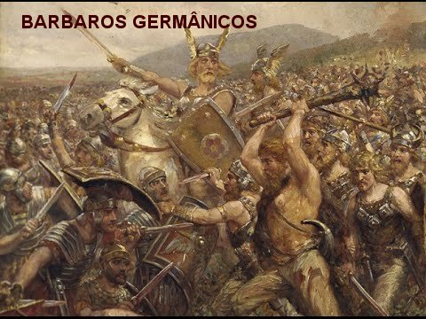
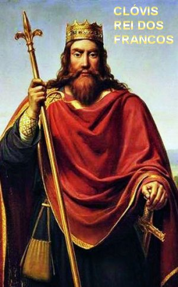
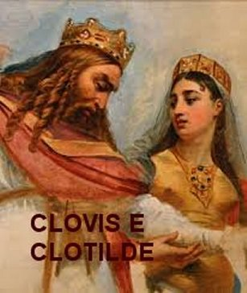

"NASCEU PARA SER SANTO"
IMPÉRIO DESTRUÍDO
Em 16 de Março de 455, o
Imperador Romano Valentiniano III foi traído e assassinado por dois homens da
Guarda – Imperial. Com sua morte, extinguia-se a 
Aquela ocasião marcou o início de uma abominável e terrível disputa entre governantes, que na sua totalidade estavam associados e comprometidos com interesses escusos, em que muitas pessoas, até influentes, se portavam como joguetes manobrados por políticos venais ou permaneciam completamente envolvidos por paixões humanas. O Império Romano se desagregava como castelos de areia na praia, irremediavelmente corroídos pelas águas do mar. E assim, ia se fragmentando, minado por forças interesseiras e corroído em suas bases pelo detestável declínio dos costumes e da total ausência de organização. A imoralidade e as intrigas campeavam livremente, neutralizando totalmente os princípios da moral, da educação e da vida familiar.
Os constantes assédios dos bárbaros do norte, muito embora não tivessem culpa da desagregação e destruição do Império Romano, evidentemente ajudava a tornar insuportável e intolerável a atmosfera reinante na vida do povo.
Na verdade, durante as invasões dos bárbaros na Europa, no século V, a Gália Romana já apresentava todos os sintomas de que o Império Romano agonizava, e a Igreja, por meio de grandes santos, se esforçava buscando converter os bárbaros invasores, atraindo-os para o meio dos cristãos.
NASCIMENTO DE SÃO REMÍGIO
Pouco tempo antes dos fatos se precipitarem, a tradição indica que Remígio nasceu em Cerny-en-Laonnois, perto de Laon, Picardia, na alta sociedade Gálio-Romana, no ano 436. Era filho de Emilio, Conde de Laon, homem de extraordinário mérito e grande valor, e da Senhora Celina, futura Santa Celina, filha do Bispo de Soissons. Estudou em Reims e a medida que avançava nos estudos foi se tornando conhecido por sua inteligência preciosa, da mesma maneira que revelava uma piedosa santidade e uma admirável facilidade na oratória, se expressando de maneira bonita, com conhecimento e muito vigor, sobre qualquer assunto.
ELEITO BISPO PELO POVO E POR DEUS
Esta realidade, propiciou-lhe um grande destaque, despertando elogios dos seus mestres e dos admiradores, de tal modo, que no ano 459, com apenas 22 anos de idade, quando o Bispo de Reims faleceu, ele foi escolhido e eleito pelo povo Bispo de Reims, apesar de ainda ser um leigo. Mas de nenhum modo o jovem queria aceitar tamanha responsabilidade, alegando com razão que aquela escolha contrariava os cânones sagrados, que estipulavam a idade mínima de 30 anos para o episcopado. A discussão foi longe. E ainda se discutia o assunto, quando aconteceu uma manifestação sobrenatural, um raio de luz vindo do céu, iluminou-lhe o rosto diante de muitas pessoas presentes, o que fez o clero confirmar a nomeação e o povo se manter firme na determinação de aclamá-lo Bispo, agora com o beneplácito Divino. Remígio deu-se por vencido.
UM BISPO REALMENTE SANTO
Ele pertencia a uma tradicional família da nobreza romana, que ainda tinha tido a oportunidade de participar da expansão do Império Romano do Ocidente pela Gália, como era chamado o território francês. Naquela época, a região era totalmente pagã e constantemente assolada por sucessivas invasões dos bárbaros, e por isso mesmo, era sempre governada pelo povo franco que nela habitava, e que mais tarde, ficou conhecido como o povo francês. Eles eram muito habilidosos no trabalho, e na guerra eram excelentes e viris combatentes.
Os primeiros biógrafos de São Remígio, assim como seus contemporâneos, afirmam que o seu nascimento foi predito por São Montano, que era um homem solitário de vida ascética e entregue à contemplação. Os escritores descrevem que certa noite, São Montano rezava ajoelhado num terreno pedregoso,“e pedia a DEUS com muita insistência, suplicando a NOSSO SENHOR que concedesse uma solução para neutralizar a malícia e a indiferença que imperava naqueles conturbados tempos”. Então aquele religioso solitário sentiu bem vivo e claro em seu coração, sonoras e carinhosas palavras,“que anunciavam o nascimento de um varão, o qual, por sua santidade de vida, obteria a conversão dos gauleses e dos seus invasores”.
Todos estes fatos, unidos à atuação incansável daquele jovem de 22 anos a frente de tão importante Sede Episcopal, logo revelaram em pouco tempo, que verdadeiramente a escolha do povo tinha sido acertada. São Remígio rapidamente ganhou popularidade e amizade de todos. São Gregório de Tours em seu célebre livro:“História Francorum” definiu bem o prestígio do novo Bispo:“São Remígio era um Bispo de uma ciência notável, primeiro tinha se impregnado do estudo da teórica, mas de tal maneira se distinguia também pela santidade, que se igualava a Silvestre nos milagres”. São Gregório de Tours se manifestou assim, por motivo da quantidade notável de milagres que DEUS NOSSO SENHOR realizava pela piedosa e humilde intercessão de São Remígio.
Seus biógrafos ressaltam que era tão grande e especial a sua virtude, maturidade de espírito e ciência, que ele principiou seu episcopado como o mais experimentado dos Bispos. Diz um deles, Bispo Venâncio Fortunato: “Remígio era largo em suas esmolas, profundamente humano, assíduo em velar, constante e devoto em rezar, perfeito na caridade, insigne na doutrina, sempre preparado para falar das coisas mais altas e Divinas. Atraía a todos pela bondade de seu coração, e mesmo as aves do céu vinham pousar em seus ombros e em suas mãos”.
O BISPO REMÍGIO SABIA CONQUISTAR CORAÇÕES
O procedimento fraterno e piedoso do Bispo começou a conquistar os corações dos fiéis, em quantidade, e com tal ímpeto e calor, que todos sentiam satisfação em se aproximar dele, em colaborar com doações financeiras ou materiais, nos empreendimentos necessários a Diocese e também, para ajudar os mais necessitados. E com todo empenho e caridade São Remígio além dos benefícios materiais, mantinha no coração um fervoroso desejo de consolidar a fé no coração daqueles que buscavam sua amizade, e também, se preocupava em converter aqueles que se mantinham distantes.
OS BÁRBAROS FRANCOS
Na época, a Gália situava-se no atual território da Bélgica, onde se estabeleceu a tribo dos Francos Sálios. A região era um arquipélago religioso com áreas como se fossem ilhas onde existiam os Católicos, cercados pelas outras áreas maiores, ocupadas pelos Burgúndios e Visigodos de fé Ariana (germânica), enquanto a zona rural ainda era pagã. Os Francos lideravam a Gália a sua maneira, e o seu chefe era Childerico. Menos desenvolvidos do que os outros povos, no entanto, os Francos eram grandes lutadores (não usavam capacetes e nem armaduras), mas prestou bons serviços militares ao Império Romano no passado. Com a sequência dos anos, as qualidades de Childerico chegaram ao conhecimento do Bispo Remígio, que procurava manter um contato com ele através de correspondência. Childerico no ano 464 tinha retornado a sua terra depois de ter passado oito anos exilado na Turíngia. São Remígio buscando convertê-lo aumentou a correspondência durante 16 anos, esforçando-se para atraí-lo à Fé Católica. Contudo ele sempre resistiu, embora mantivesse um excelente relacionamento com os Católicos, e inclusive lhes ajudava, dando-lhes apoio nas obras. Mas, por outro lado, se mantinha apegado aos seus deuses. E assim, o tempo correu e ele se manteve indiferente, sem qualquer outra novidade naquele relacionamento. Até que um dia chegou a Sede do Episcopado em Reims, a notícia de que Childerico havia morrido, sem ter se convertido ao Cristianismo. O Bispo Remígio ficou triste e fez o que verdadeiramente podia fazer, rezou muito pela alma dele.
NOVO REI DOS FRANCOS
Childerico morreu em 482, e foi sucedido por Clóvis, seu filho que estava com 14 a 15 anos de idade, mas que os Francos logo se apressaram em proclamá-lo Rei. Para Clóvis, São Remígio, era um bispo católico no território franco, que sempre escreveu cartas respeitosas e amigáveis ao seu pai. Uma delas dizia: "Cuidado para que o Senhor não desvie o olhar de si mesmo. Recomende-se aos seus Bispos. Divirta-se com os jovens, mas ouça o conselho dos velhos". Por outro lado o Bispo Remígio sempre reconheceu a soberania de Childerico sobre o seu povo.
Seu filho Clóvis não conhecia o
Bispo pessoalmente, mas logo simpatizou com ele, quando leu as muitas cartas que
enviara ao seu pai. E também, o Bispo 
Em face da morte de Childerico e da posse do filho Clóvis como novo Rei dos Francos, Remígio escreveu-lhe uma carta cumprimentando e também fazendo recomendações: “Primeiramente deveis cuidar que o juízo do SENHOR DEUS não vos abandone, e que vosso mérito se mantenha na altura aonde o levou vossa humildade; porque, segundo o provérbio, as ações do homem se julgam pelo seu fim. Deveis rodear-vos de conselheiros dos quais possais vos ufanar. Pratique o bem, seja casto e honesto. Mostrai-vos cheio de deferência para com vossos Bispos, e recorrei sempre a seus conselhos. Diverti-vos com os jovens, mas deliberai com os anciãos, e, se quereis reinar, mostrai-vos digno”.
Embora fosse pagão, Clóvis do mesmo modo que o seu pai Childerico não perseguia os cristãos, e tinham respeito pelos Bispos e Sacerdotes das cidades que avassaladoramente conquistavam e passavam a dominar.
Por outro lado, é fácil observar pela história da vida dos Santos, que cada um espiritualmente sempre foi convidado a refletir e procurar copiar alguma das infinitas perfeições de nosso DEUS. Assim, uns Santos buscaram espelhar a “fortaleza” de NOSSO SENHOR, enquanto outros quiseram imitar à “lógica Divina”, outros buscaram praticar a imensa “pureza do SENHOR”. São Remígio na sua humilde simplicidade procurou espelhar de modo admirável “a bondade” do SENHOR JESUS. Ao longo da sua vida, sem o menor vestígio de egoísmo, sentia-se alegre e feliz quando percebia o bom êxito do próximo. A pureza do seu olhar revelava a bondade do coração, por isso mesmo, atraía a todos por sua afabilidade e bom trato. Esta realidade foi uma das coisas que mais impressionaram o bárbaro Clóvis desde que conheceu o Santo, e que produzia nele uma imensa alegria e prazer, de admirar a São Remígio.
Na verdade a conversão de Clóvis foi um grande acontecimento ocorrido por intercessão de São Remígio. Ele era o quinto Rei dos Bárbaros Francos. Este povo, saindo das planícies da Holanda, dirigiu-se para o sul, apoderou-se das melhores partes dos Países Baixos, da Picardia e da Ilha-de-França. Clóvis tornara-se Rei ainda adolescente, embora já fosse um grande, valoroso e audaz guerreiro. Havia participado de muitas guerras e conquistas ao lado do seu pai Childerico.
O CÁLICE DE SOISSONS
O conhecido episódio de Soissons revela de modo inquestionável a amizade, o respeito e a consideração de Clóvis pelo Bispo Remígio. Durante uma batalha vitoriosa em Soissons, os soldados pagãos aproveitaram e assaltaram casas e firmas da cidade, inclusive roubaram a Igreja, levando ornamentos e vasos sagrados. São Remígio lamentou o fato, sobretudo o rapto de um Cálice de Prata, finamente cinzelado, e por isso, pediu a Clóvis que, se possível, o conseguisse de volta para ele. Junto dos soldados na hora da repartição dos despojos, o Rei pediu como um favor, que não se lançasse a sorte sobre o referido Cálice, mas que o dessem a ele. Todos os chefes militares concordaram menos um soldado que era o mais bárbaro de todos, e logo fortuitamente com um golpe de acha (machadinha) danificou o Cálice, dizendo insolentemente ao Rei que ele não o teria assim como os outros. O Rei Clóvis ficou perplexo, mas nada falou, dissimulou o seu desapontamento como pôde. Dias mais tarde, fazendo a revista de sua tropa, chegou-se diante do insolente soldado e, sob o pretexto de que suas armas não estavam em ordem, propositalmente as lançou por terra. O soldado impertinente com cara de poucos amigos abaixou para apanhá-las. Então Clóvis deu-lhe um potente golpe de acha na cabeça, matando-o e dizendo ao mesmo tempo:“Assim fizeste com o cálice de Soissons”.
OUTRA GUERRA, NOVO CASAMENTO

O Rei estava em campanha militar contra a Turíngia. Assim que venceu a batalha e retornou ao lar na Gália, aceitou a proposta do Bispo Remígio, e em 492, no décimo ano do seu reinado, desposou Clotilde, filha de Chilperico, irmão do Rei da Borgonha. O casamento foi realizado na Catedral da cidade de Soissons e o Bispo Remígio foi o celebrante. Clotilde era uma jovem de excelentes predicados, católica exemplar e praticante, que depois do casamento, na continuidade dos anos, em todas as oportunidades junto de Clóvis, com convicção e amor instava o seu marido para que se convertesse ao Cristianismo, que é a verdadeira religião que nos conduz a DEUS. Ele prometeu que um dia se converteria; mas, na realidade, sempre adiava a sua conversão para um futuro incerto, que nem ele mesmo sabia definir.